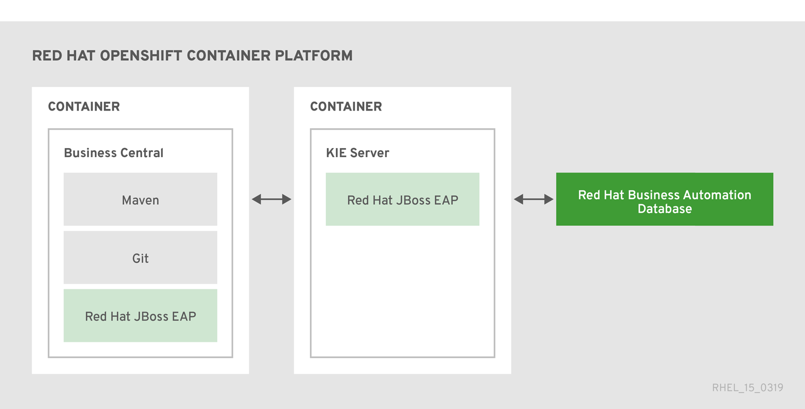
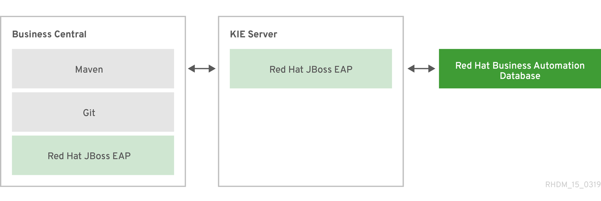
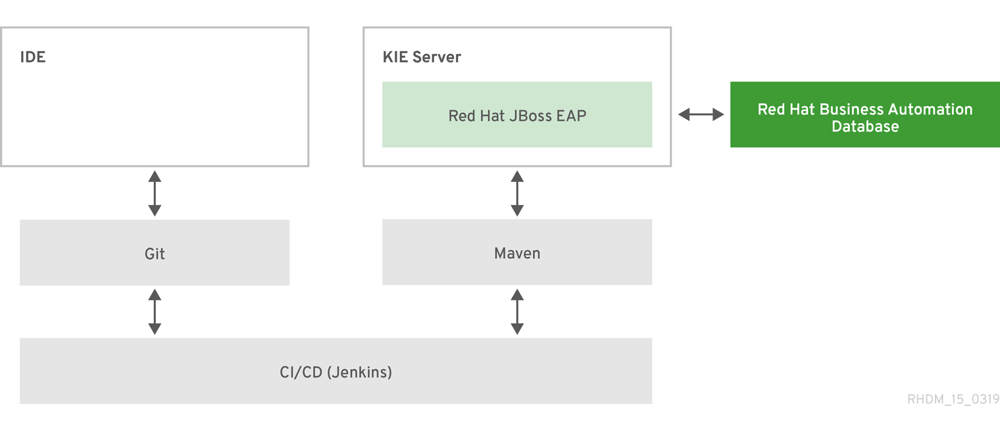
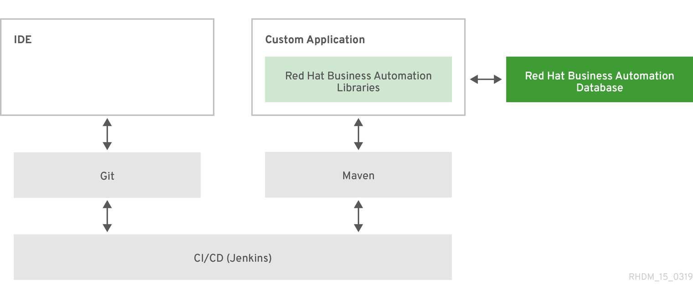

Designing your decision management architecture for Red Hat Decision Manager
Abstract
- Preface
- Making open source more inclusive
- 1. Installation environment options for Red Hat Decision Manager
- 2. Decision-authoring assets in Red Hat Decision Manager
- 3. Project storage and build options with Red Hat Decision Manager
- 4. Project deployment options with Red Hat Decision Manager
- 5. Asset execution options with Red Hat Decision Manager
- 6. Example decision management architectures with Red Hat Decision Manager
- 7. Additional resources
- A. Versioning information
- B. Contact information
Preface
As a business analyst, system administrator, or business rules developer, the types of Red Hat Decision Manager business assets that you create and the way in which you develop, store, execute, and deploy those assets varies based on the needs of your business automation environment. You can design a decision management architecture that uses Business Central or an external integrated development environment (IDE) for asset development, a built-in or external Git repository for storage and version control, a KIE Server or embedded application for deployment, or other implementation combinations. You can also deploy Red Hat Decision Manager into a Red Hat OpenShift Container Platform environment for an enhanced containerized implementation.
This document describes basic concepts and options for a Red Hat Decision Manager implementation to consider when designing your decision management architecture. To verify the most suitable implementation for your environment, contact your Red Hat Technical Account Manager or Solutions Architect.
Making open source more inclusive
Red Hat is committed to replacing problematic language in our code, documentation, and web properties. We are beginning with these four terms: master, slave, blacklist, and whitelist. Because of the enormity of this endeavor, these changes will be implemented gradually over several upcoming releases. For more details, see our CTO Chris Wright’s message.
Chapter 1. Installation environment options for Red Hat Decision Manager
With Red Hat Decision Manager, you can set up a development environment to develop business applications, a runtime environment to run those applications to support decisions, or both.
- Development environment: Typically consists of one Business Central installation and at least one KIE Server installation. You can use Business Central to design decisions and other artifacts, and you can use KIE Server to execute and test the artifacts that you created.
- Runtime environment: Consists of one or more KIE Server instances with or without Business Central. Business Central has an embedded Decision Manager controller. If you install Business Central, use the Menu → Deploy → Execution servers page to create and maintain containers. If you want to automate KIE Server management without Business Central, you can use the headless Decision Manager controller.
You can also cluster both development and runtime environments. A clustered development or runtime environment consists of a unified group or cluster of two or more servers. The primary benefit of clustering Red Hat Decision Manager development environments is high availability and enhanced collaboration, while the primary benefit of clustering Red Hat Decision Manager runtime environments is high availability and load balancing. High availability decreases the chance of data loss when a single server fails. When a server fails, another server fills the gap by providing a copy of the data that was on the failed server. When the failed server comes online again, it resumes its place in the cluster.
Clustering of the runtime environment is currently supported on Red Hat JBoss EAP 7.3 and Red Hat OpenShift Container Platform only.
Chapter 2. Decision-authoring assets in Red Hat Decision Manager
Red Hat Decision Manager supports several assets that you can use to define business decisions for your decision service. Each decision-authoring asset has different advantages, and you might prefer to use one or a combination of multiple assets depending on your goals and needs.
The following table highlights the main decision-authoring assets supported in Red Hat Decision Manager projects to help you decide or confirm the best method for defining decisions in your decision service.
Table 2.1. Decision-authoring assets supported in Red Hat Decision Manager
| Asset | Highlights | Authoring tools | Documentation |
|---|---|---|---|
|
Decision Model and Notation (DMN) models |
|
Business Central or other DMN-compliant editor | |
|
Guided decision tables |
|
Business Central | |
|
Spreadsheet decision tables |
|
Spreadsheet editor |
Designing a decision service using spreadsheet decision tables |
|
Guided rules |
|
Business Central | |
|
Guided rule templates |
|
Business Central | |
|
DRL rules |
|
Business Central or integrated development environment (IDE) | |
|
Predictive Model Markup Language (PMML) models |
|
PMML or XML editor |
Chapter 3. Project storage and build options with Red Hat Decision Manager
As you develop a Red Hat Decision Manager project, you need to be able to track the versions of your project with a version-controlled repository, manage your project assets in a stable environment, and build your project for testing and deployment. You can use Business Central for all of these tasks, or use a combination of Business Central and external tools and repositories. Red Hat Decision Manager supports Git repositories for project version control, Apache Maven for project management, and a variety of Maven-based, Java-based, or custom-tool-based build options.
The following options are the main methods for Red Hat Decision Manager project versioning, storage, and building:
Table 3.1. Project version control options (Git)
| Versioning option | Description | Documentation |
|---|---|---|
|
Business Central Git VFS |
Business Central contains a built-in Git Virtual File System (VFS) that stores all processes, rules, and other artifacts that you create in the authoring environment. Git is a distributed version control system that implements revisions as commit objects. When you commit your changes into a repository, a new commit object in the Git repository is created. When you create a project in Business Central, the project is added to the Git repository connected to Business Central. |
NA |
|
External Git repository |
If you have Red Hat Decision Manager projects in Git repositories outside of Business Central, you can import them into Red Hat Decision Manager spaces and use Git hooks to synchronize the internal and external Git repositories. |
Table 3.2. Project management options (Maven)
| Management option | Description | Documentation |
|---|---|---|
|
Business Central Maven repository |
Business Central contains a built-in Maven repository that organizes and builds project assets that you create in the authoring environment. Maven is a distributed build-automation tool that uses repositories to store Java libraries, plug-ins, and other build artifacts. When building projects and archetypes, Maven dynamically retrieves Java libraries and Maven plug-ins from local or remote repositories to promote shared dependencies across projects. Note For a production environment, consider using an external Maven repository configured with Business Central. |
NA |
|
External Maven repository |
If you have Red Hat Decision Manager projects in an external Maven repository, such as Nexus or Artifactory, you can create a |
Table 3.3. Project build options
| Build option | Description | Documentation |
|---|---|---|
|
Business Central (KJAR) |
Business Central builds Red Hat Decision Manager projects stored in either the built-in Maven repository or a configured external Maven repository. Projects in Business Central are packaged automatically as knowledge JAR (KJAR) files with all components needed for deployment when you build the projects. | |
|
Standalone Maven project (KJAR) |
If you have a standalone Red Hat Decision Manager Maven project outside of Business Central, you can edit the project | |
|
Embedded Java application (KJAR) |
If you have an embedded Java application from which you want to build your Red Hat Decision Manager project, you can use a | |
|
CI/CD tool (KJAR) |
If you use a tool for continuous integration and continuous delivery (CI/CD), you can configure the tool set to integrate with your Red Hat Decision Manager Git repositories to build a specified project. Ensure that your projects are packaged and built as KJAR files to ensure optimal deployment. |
NA |
|
S2I in OpenShift (container image) |
If you use Red Hat Decision Manager on Red Hat OpenShift Container Platform, you can build your Red Hat Decision Manager projects as KJAR files in the typical way or use Source-to-Image (S2I) to build your projects as container images. S2I is a framework and a tool that allows you to write images that use the application source code as an input and produce a new image that runs the assembled application as an output. The main advantage of using the S2I tool for building reproducible container images is the ease of use for developers. |
Chapter 4. Project deployment options with Red Hat Decision Manager
After you develop, test, and build your Red Hat Decision Manager project, you can deploy the project to begin using the business assets you have created. You can deploy a Red Hat Decision Manager project to a configured KIE Server, to an embedded Java application, or into a Red Hat OpenShift Container Platform environment for an enhanced containerized implementation.
The following options are the main methods for Red Hat Decision Manager project deployment:
Table 4.1. Project deployment options
| Deployment option | Description | Documentation |
|---|---|---|
|
Deployment to an OpenShift environment |
Red Hat OpenShift Container Platform combines Docker and Kubernetes and enables you to create and manage containers. You can install both Business Central and KIE Server on OpenShift. Red Hat Decision Manager provides templates that you can use to deploy a Red Hat Decision Manager authoring environment, managed server environment, immutable server environment, or trial environment on OpenShift. With OpenShift, components of Red Hat Decision Manager are deployed as separate OpenShift pods. You can scale each of the pods up and down individually, providing as few or as many containers as necessary for a particular component. You can use standard OpenShift methods to manage the pods and balance the load. | |
|
Deployment to KIE Server |
KIE Server is the server provided with Red Hat Decision Manager that runs the decision services, process applications, and other deployable assets from a packaged and deployed Red Hat Decision Manager project (KJAR file). These services are consumed at run time through an instantiated KIE container, or deployment unit. You can deploy and maintain deployment units in KIE Server using Business Central or using a headless Decision Manager controller with its associated REST API (considered a managed KIE Server instance). You can also deploy and maintain deployment units using the KIE Server REST API or Java client API from a standalone Maven project, an embedded Java application, or other custom environment (considered an unmanaged KIE Server instance). |
Packaging and deploying a Red Hat Decision Manager project |
|
Deployment to an embedded Java application |
If you want to deploy Red Hat Decision Manager projects to your own Java virtual machine (JVM) environment, microservice, or application server, you can bundle the application resources in the project WAR files to create a deployment unit similar to a KIE container. You can also use the core KIE APIs (not KIE Server APIs) to configure a KIE scanner to periodically update KIE containers. |
Chapter 5. Asset execution options with Red Hat Decision Manager
After you build and deploy your Red Hat Decision Manager project to KIE Server or other environment, you can execute the deployed assets for testing or for runtime consumption. You can also execute assets locally in addition to or instead of executing them after deployment.
The following options are the main methods for Red Hat Decision Manager asset execution:
Table 5.1. Asset execution options
| Execution option | Description | Documentation |
|---|---|---|
|
Execution in KIE Server |
If you deployed Red Hat Decision Manager project assets to KIE Server, you can use the KIE Server REST API or Java client API to execute and interact with the deployed assets. You can also use Business Central or the headless Decision Manager controller outside of Business Central to manage the configurations and KIE containers in the KIE Server instances associated with your deployed assets. | |
|
Execution in an embedded Java application |
If you deployed Red Hat Decision Manager project assets in your own Java virtual machine (JVM) environment, microservice, or application server, you can use custom APIs or application interactions with core KIE APIs (not KIE Server APIs) to execute assets in the embedded engine. | |
|
Execution in a local environment for extended testing |
As part of your development cycle, you can execute assets locally to ensure that the assets you have created in Red Hat Decision Manager function as intended. You can use local execution in addition to or instead of executing assets after deployment. |
"Executing rules" in Designing a decision service using DRL rules |
Depending on your deployment and execution environment, you can use a Smart Router to aggregate multiple independent KIE Server instances as though they are a single server. Smart Router is a single endpoint that can receive calls from client applications to any of your services and route each call automatically to the KIE Server that runs the service. For more information about Smart Router, see Installing and configuring Red Hat Decision Manager in a Red Hat JBoss EAP clustered environment.
Chapter 6. Example decision management architectures with Red Hat Decision Manager
The following scenarios illustrate common variations of Red Hat Decision Manager installation, asset authoring, project storage, project deployment, and asset execution in a decision management architecture. Each section summarizes the methods and tools used and the advantages for the given architecture. The examples are basic and are only a few of the many combinations you might consider, depending on your specific goals and needs with Red Hat Decision Manager.
- Red Hat Decision Manager authoring and managed server environments on OpenShift with Business Central and KIE Server
-
Installation environment: Red Hat Decision Manager on Red Hat OpenShift Container Platform, using the
rhdm710-authoring.yamlandrhdm710-kieserver.yamltemplate files - Project storage and build environment: External Git repository for project versioning synchronized with the Business Central Git repository using Git hooks, and external Maven repository for project management and building configured with KIE Server
- Asset-authoring tool: Business Central
- Main asset types: Decision Model and Notation (DMN) models for decisions
- Project deployment and execution environment: KIE Server on Red Hat OpenShift Container Platform
Scenario advantages:
- Containerized implementation of Red Hat Decision Manager in a cloud-based development environment. Components of Red Hat Decision Manager are deployed as separate OpenShift pods that you can scale up and down individually, providing as few or as many containers as necessary for a particular component. You can use standard OpenShift methods to manage the pods and balance the load.
- Access to the repositories, assets, asset designers, and project build options in Business Central.
- Standardized asset-authoring approach using DMN for optimal integration and stability.
- Access to KIE Server functionality and KIE APIs for asset deployment and execution.
Figure 6.1. Red Hat Decision Manager on OpenShift with Business Central and KIE Server
-
Installation environment: Red Hat Decision Manager on Red Hat OpenShift Container Platform, using the
- Red Hat Decision Manager on Red Hat JBoss EAP with Business Central and KIE Server
- Installation environment: Red Hat Decision Manager on Red Hat JBoss Enterprise Application Platform
- Project storage and build environment: External Git repository for project versioning synchronized with the Business Central Git repository using Git hooks, and external Maven repository for project management and building configured with KIE Server
- Asset-authoring tool: Business Central
- Main asset types: Decision Model and Notation (DMN) models for decisions
- Project deployment and execution environment: KIE Server
Scenario advantages:
- Stable implementation of Red Hat Decision Manager in an on-premise development environment
- Access to the repositories, assets, asset designers, and project build options in Business Central
- Standardized asset-authoring approach using DMN for optimal integration and stability
- Access to KIE Server functionality and KIE APIs for asset deployment and execution
Figure 6.2. Red Hat Decision Manager on Red Hat JBoss EAP with Business Central and KIE Server
- Red Hat Decision Manager on Red Hat JBoss EAP with an IDE and KIE Server
- Installation environment: Red Hat Decision Manager on Red Hat JBoss Enterprise Application Platform
- Project storage and build environment: External Git repository for project versioning (not synchronized with Business Central) and external Maven repository for project management and building configured with KIE Server
- Asset-authoring tools: Integrated development environment (IDE), such as Red Hat CodeReady Studio, and a spreadsheet editor or a Decision Model and Notation (DMN) modeling tool for other decision formats
- Main asset types: Drools Rule Language (DRL) rules, spreadsheet decision tables, and Decision Model and Notation (DMN) models for decisions
- Project deployment and execution environment: KIE Server
Scenario advantages:
- Flexible implementation of Red Hat Decision Manager in an on-premise development environment
- Ability to define business assets using an external IDE and other asset-authoring tools of your choice
- Access to KIE Server functionality and KIE APIs for asset deployment and execution
Figure 6.3. Red Hat Decision Manager on Red Hat JBoss EAP with an IDE and KIE Server
- Red Hat Decision Manager with an IDE and an embedded Java application
- Installation environment: Red Hat Decision Manager libraries embedded within a custom application
- Project storage and build environment: External Git repository for project versioning (not synchronized with Business Central) and external Maven repository for project management and building configured with your embedded Java application (not configured with KIE Server)
- Asset-authoring tools: Integrated development environment (IDE), such as Red Hat CodeReady Studio, and a spreadsheet editor or a Decision Model and Notation (DMN) modeling tool for other decision formats
- Main asset types: Drools Rule Language (DRL) rules, spreadsheet decision tables, and Decision Model and Notation (DMN) models for decisions
- Project deployment and execution environment: Embedded Java application, such as in a Java virtual machine (JVM) environment, microservice, or custom application server
Scenario advantages:
- Custom implementation of Red Hat Decision Manager in an on-premise development environment with an embedded Java application
- Ability to define business assets using an external IDE and other asset-authoring tools of your choice
- Use of custom APIs to interact with core KIE APIs (not KIE Server APIs) and to execute assets in the embedded engine
Figure 6.4. Red Hat Decision Manager with an IDE and an embedded Java application

Chapter 7. Additional resources
Appendix A. Versioning information
Documentation last updated on Monday, January 18, 2021.
Appendix B. Contact information
Red Hat Decision Manager documentation team: brms-docs@redhat.com